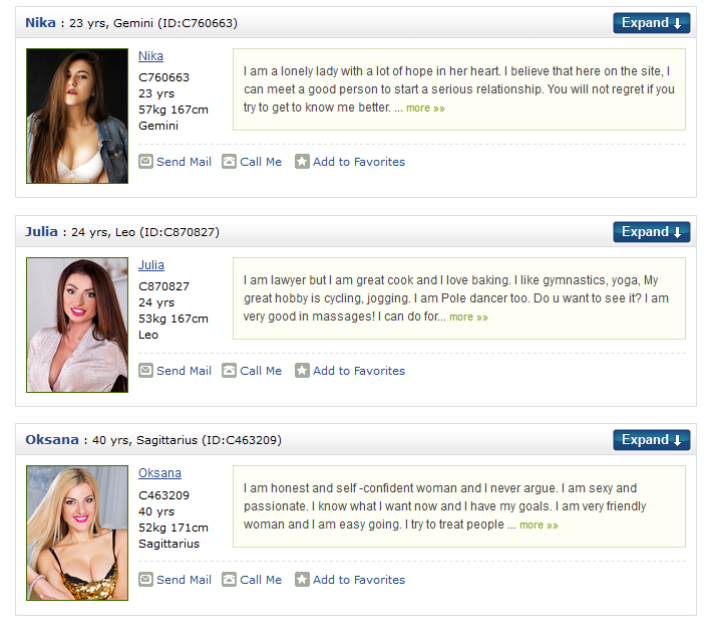
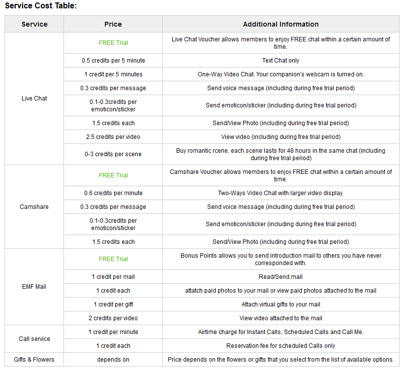

- Beautiful girls from Ukraine
- Years of experience and reputation
- Organization of real-life dates
- Access to reading success stories
- Expensive communication
What makes Russian wives so great?
CharmDate is one of the oldest dating websites in the international marriage industry. It has been online since the 1990s and is actually part of the Qpid network of dating sites. The Qpid network includes several dating services for people looking for brides from different parts of the world, and the company has an impressive success record of couples who met through the service. That is why we were already optimistic about our CharmDate review.
At first glance, Charm Date is a beautifully designed international dating service with a focus on Russian and Ukrainian brides. Its homepage has several member testimonials praising the service, a detailed description of the features, and even something special for mobile users, who can use either the mobile version of the website or a standalone Qpid mobile app, which is available both for Android and iOS.
When browsing charmdate.com, we were generally very happy with the website design and its features. However, our ultimate goal was to answer the most important question: “Is charmdate.com legit?” Here is what we found.
How it works
CharmDate takes the safety of its members very seriously, so there are only a few things you can do without an account, including checking out the website’s terms of use and accessing some other articles. If you want to take a look at the people of CharmDate, you will need to create an account. The first step of the registration process is an easy one, where you need to specify your name, birthdate, email, and choose your password.
Then you will be taken to the next step, where you will need to provide more answers about your personality and what you are looking for at CharmDate. This is done in order to help the matching algorithm find your ideal partner. After you complete the registration, your profile will need to be manually verified by the Charm Date moderators.
Once the previous step is completed, you can use your charmdate.com login to access the website and review the profiles of women interested in meeting foreign men. The member profiles at CharmDate contain everything you need to know about the woman before deciding to get to know her better.
Every woman fills in a questionnaire about her personality, appearance, and family, and there is also a hand-written introduction and biography that will give you more insight into who the woman really is. The profiles also contain additional photos, and some of them are private and require special access.
The contact options offered by Charm Date include sending mail, starting a chat, or sending the woman a physical gift. There is also a CamShare option, which allows you to communicate with the woman using two webcams. This is probably where rumors about CharmDate scams came from, but this CamShare service is nothing like webcam models you may have heard about, as here the ultimate goal is a serious relationship and marriage, not quick fun.
//= template/blockInsert.htmlWho can you find there?
As we have mentioned before, the CharmDate dating site is primarily focused on Russian and Ukrainian women, so if your tastes mainly include the beautiful and lovely Slavic brides, you are in luck.. There are several ways to discover the female members of Charm Date. The easiest one is to browse the galleries of New or Popular members. Keep in mind that Popular members already get lots of attention from other members, so they may take a while to reply to your message.
If no one from those galleries caught your attention, or if you prefer to take a proactive approach in finding your ideal match, you can try the search feature at CharmDate. There are two versions of the search available: the short search, where you can only filter women by their age and location, and advanced search, which provides you with more opportunities for finding your potential bride.
The results of your search will be displayed in a collage. In addition to the woman’s name and age, you will also see her profile photo, star sign, physical parameters, the beginning of her bio, and ID. From here, you can add the woman to your favorites, send her a message, or start a call.
Prices
As an experienced international dating site user, you are probably not going to be surprised by the fact that you need to pay if you want to access the complete Charm Date functionality. With a free account, you can create your profile, browse other profiles on the website, and add women to your favorites. The rest of the features are available on a paid basis.
CharmDate has two options for those who want to get the complete experience. The first one is a Premium membership, which is not mandatory but unlocks a few interesting features like seeing other members’ private photos and having customer support priority.
However, most Charm Date users prefer to pay for the features in credits. Each action on the website costs a certain number of credits. Each credit costs $2, and credits can be purchased in discounted packages to save you money.
Safety
We have come across several CharmDate reviews claiming that this website is not safe at all, but after investigating every aspect of the service, we could not a single security flaw. Women’s profiles here are verified by the moderators to ensure they are fully genuine, the payment options and costs are clearly explained on the website, and customer support is accessible to everyone. Plus, you can report questionable profiles, and all information is SSL-encrypted for maximum security.